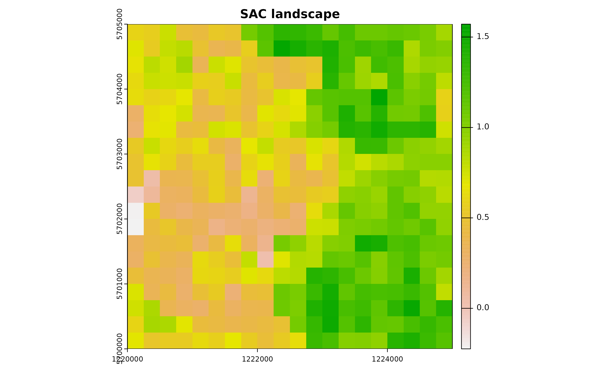
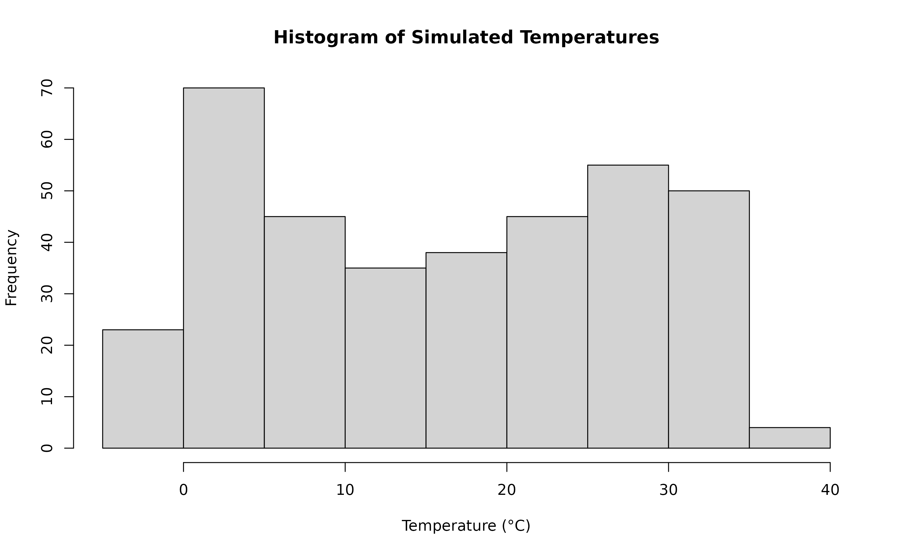
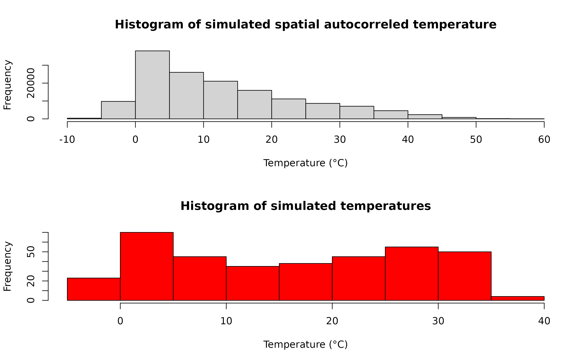
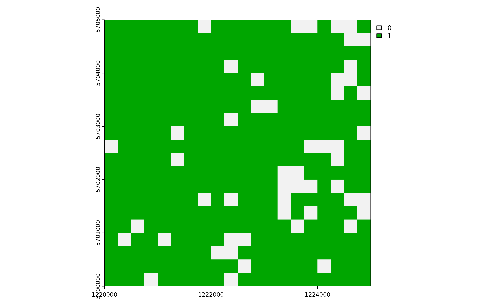
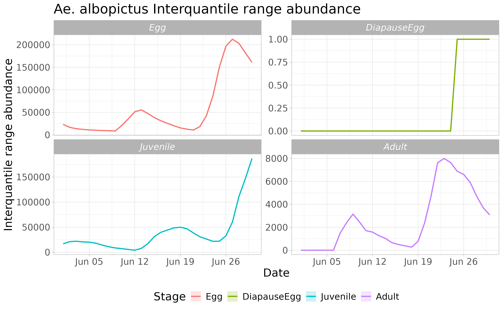

vignettes/dynamAedes_03_regional.Rmd
dynamAedes_03_regional.RmdThis vignette provides a comprehensive guide to the dynamAedes package, a unified modelling framework for invasive Aedes mosquitoes. Users can employ this spatially-explicit, time-discrete, stochastic population dynamical model, which was initially formulated for Aedes aegypti in Da Re et al., (2021) and subsequently adapted for Ae. albopictus, Ae. japonicus, and Ae. koreicus Da Re et al., (2022).
This model integrates factors like temperature, photoperiod, and intra-specific larval competition and is versatile across three spatial scales: punctual, local, and regional. The various scales provide flexibility in addressing spatial complexity and data availability, accommodating both active and passive mosquito dispersal and varying input temperature data.
For illustrative purposes, this guide focuses on model applications for Ae. albopictus across all spatial scales using a simulated temperature dataset.
At the regional scale, the model operates similarly to the “punctual” scale, processing each grid cell separately without considering active or passive dispersal. This makes each cell an isolated mosquito population. To execute the model in this context, two datasets are essential:
For the purpose of this guide, we will employ simulated datasets:
To begin, we will establish a squared lattice arena, which will serve as the site for our mosquito introduction. The chosen dimensions are 5 km on each side with a resolution of 250 m (comprising 20 columns and 20 rows, totalling 400 cells).
# Libraries
library(gstat)
library(terra)
library(eesim)
library(dynamAedes)
library(ggplot2)
Sys.setlocale("LC_TIME", "en_GB.UTF-8")# [1] ""
gridDim <- 20 # 5000m/250 m = 20 columns and rows
xy <- expand.grid(x=1:gridDim, y=1:gridDim)To infuse a spatial element into the lattice area, we will overlay a spatial pattern, which will subsequently be used to impart spatial correlation to the temperature time series. This spatially correlated pattern is derived using a semivariogram model with a specified sill and range. We then predict this model over the grid using unconditional Gaussian simulation.
varioMod <- vgm(psill=0.5, range=100, model='Exp') # psill = partial sill = (sill-nugget)
# Set up an additional variable from simple kriging
zDummy <- gstat(formula=z~1,
locations = ~x+y,
dummy=TRUE,
beta=1,
model=varioMod,
nmax=1)
# Generate a randomly autocorrelated predictor data field
set.seed(123)
xyz <- predict(zDummy, newdata=xy, nsim=1)# [using unconditional Gaussian simulation]Creating a spatially correlated raster with the SA variable enhances our understanding of environmental features like urban vegetation distribution.
utm32N <- "+proj=utm +zone=32 +ellps=WGS84 +datum=WGS84 +units=m +no_defs"
r <- terra::rast(nrow=gridDim, ncol=gridDim, crs=utm32N, ext=terra::ext(1220000,1225000, 5700000,5705000))
terra::values(r) <- xyz$sim1
plot(r, main="SAC landscape")
# convert to a data.frame
df <- data.frame("id"=1:nrow(xyz), terra::crds(r))
bbox <- terra::as.polygons(terra::ext(r), crs=utm32N)
# Store Parameters for autocorrelation
autocorr_factor <- terra::values(r)We simulate a 1-year temperature time series with seasonal trend. For the time series we consider a mean value of 16°C and standard deviation of 2°C.
ndays = 365
set.seed(123)
sim_temp <- eesim::create_sims(n_reps = 1,
n = ndays,
central = 16,
sd = 2,
exposure_type = "continuous",
exposure_trend = "cos1", exposure_amp = -1.0,
average_outcome = 12,
outcome_trend = "cos1",
outcome_amp = 0.8,
rr = 1.0055)A visualisation of the distribution of temperature values and temporal trend.
hist(sim_temp[[1]]$x,
xlab="Temperature (°C)",
main="Histogram of Simulated Temperatures")
plot(sim_temp[[1]]$date,
sim_temp[[1]]$x,
main="Simulated Temperature Seasonal Trend",
xlab="Date", ylab="Temperature (°C)"
)We can then “expand onto space” the temperature time series by multiplying it with the autocorrelated surface simulated above.
mat <- do.call(rbind, lapply(1:ncell(r), function(x) {
d_t <- sim_temp[[1]]$x*autocorr_factor[[x]]
return(d_t)
}))A comparison between the distribution of the initial temperature time series and autocorrelated temperature surface
par(mfrow=c(2,1))
hist(mat, xlab="Temperature (°C)", main="Histogram of simulated spatial autocorreled temperature")
hist(sim_temp[[1]]$x, xlab="Temperature (°C)", main="Histogram of simulated temperatures", col="red")
par(oldpar) Float numbers in the temperature matrix would slow the computational speed, thus we first multiply them by 1000 and then transform them in integer numbers. w will be subset to match the simulated time period below.
w <- sapply(df_temp[,-c(1:3)], function(x) as.integer(x*1000))We can now define a two-column matrix of coordinates to identify each cell in the lattice grid.
cc <- df_temp[,c("x","y")]We are now left with a few model variables which need to be defined.
## Define the day of introduction (May 1st is day 1)
str <- "2000-06-01"
## Define the end-day of life cycle (July 2nd is the last day)
endr <- "2000-07-02"
## Define the number of eggs to be introduced
ie <- 100
## Define the number of model iterations
it <- 1 # The higher the number of simulations the better
## Define the number of liters for the larval density-dependent mortality
habitat_liters <- 1
## Define proj4 string for input coordinates
utm32N <- "+proj=utm +zone=32 +ellps=WGS84 +datum=WGS84 +units=m +no_defs"
## Define the number of parallel processes (for sequential iterations set nc=1)
cl <- 1Running the model with the settings specified in this example takes about 3 minutes.
simout <- dynamAedes.m(species="albopictus",
scale="rg",
jhwv=habitat_liters,
temps.matrix=w[,as.numeric(format(as.Date(str),"%j")):as.numeric(format(as.Date(endr),"%j"))],
coords.proj4=utm32N,
cells.coords=as.matrix(cc),
startd=str,
endd=endr,
n.clusters=cl,
iter=it,
intro.eggs=ie,
compressed.output=TRUE,
seeding=TRUE,
verbose=FALSE)#3. Analyse the results A first summary of simulations can be obtained with:
summary(simout)# Summary of dynamAedes simulations:
# ----------------------------------
# Species: Aedes albopictus
# Scale: REGIONAL
# Start Date: 2000-06-01
# End Date: 2000-07-02
# Number of Iterations: 1
# Introduced Stage: egg
# Number Introduced: 100
# Is Output Compressed?: Yes
# Water in the System: 1 L
# Min days with population: 30
# Max days with population: 30The simout object is a S4 object where simulation outputs and related details are saved in different slot:
For example, the number of model iterations is saved in:
simout@n_iterationsThe simulation output is stored in:
simout@simulationWhich is a list where the the first level stores
simulation of different iteration, while the
secondcorresponds to the simulated days in the
corresponding iteration. If we inspect the first iteration, we observe
that the model has computed length(simout[[1]]) days, since
we have started the simulation on the 1st of July and ended on the 1st
of August.
length(simout@simulation[[1]])# [1] 30The third level corresponds to the quantity of individuals for each stage (rows) in each day within each grid cell of the landscape (columns). If we inspect the first day within the first iteration, we obtain a matrix having:
dim(simout@simulation[[1]][[1]])# [1] 4 400We can now use the auxiliary functions of the package to Analyse the results.
First, we can retrieve the “probability of a successful introduction”, computed as the proportion of model iterations that resulted in a viable mosquito population (in any cells of the grid) at a given date.
psi(input_sim = simout, eval_date = 30)# Days_after_intro p_success stage
# 1 Day 30 1 PopulationWe can also get a “spatial output”, using the function psi_sp, which requires as additional input only the matrix of the pixels coordinates

We can now compute the interquantile range abundance of the simulated population using the function adci over the whole landscape.
dd <- max(simout) #retrieve the maximum number of simulated days
# Compute the inter-quartile of abundances along the iterations
breaks=c(0.25,0.50,0.75)
ed=1:dd
# type "O" derives a non-spatial time series
outdf <- rbind(
adci(simout, eval_date=ed, breaks=breaks, stage="Eggs", type="O"),
adci(simout, eval_date=ed, breaks=breaks, stage="Juvenile", type="O"),
adci(simout, eval_date=ed, breaks=breaks, stage="Adults", type="O"),
adci(simout, eval_date=ed, breaks=breaks, stage="Dia", type="O")
)Then we can look at the time series of the population dynamics stage by stage at the whole landscape level.
outdf$stage <- factor(outdf$stage, levels= c('Egg', 'DiapauseEgg', 'Juvenile', 'Adult'))
outdf$Date <- rep(seq.Date(as.Date(str), as.Date(endr) - 2, by="day"), 4)
ggplot(outdf, aes(x=Date, y=X50., group=factor(stage), col=factor(stage))) +
ggtitle("Ae. albopictus Interquantile range abundance") +
geom_ribbon(aes(ymin=X25., ymax=X75., fill=factor(stage)),
col="white",
alpha=0.2,
outline.type="full") +
geom_line(linewidth=0.8) +
labs(x="Date", y="Interquantile range abundance", col="Stage", fill="Stage") +
facet_wrap(~stage, scales = "free_y") +
theme_light() +
theme(legend.pos="bottom",
text = element_text(size=16),
strip.text = element_text(face = "italic"))